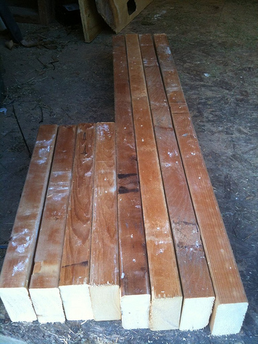
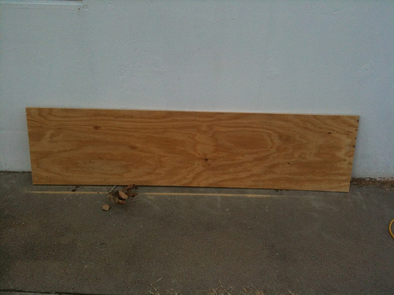
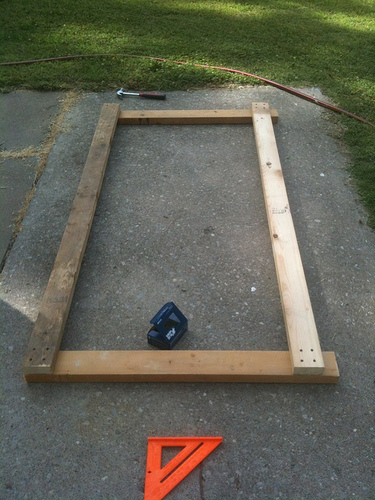
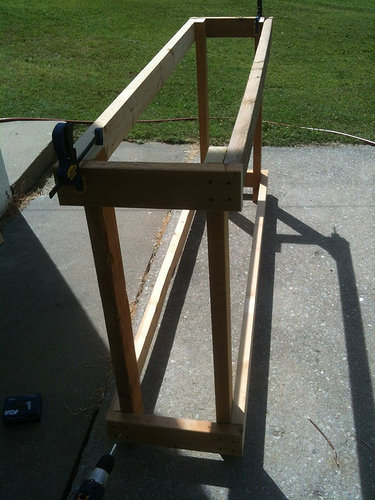
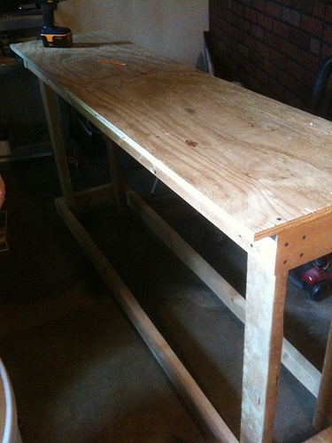
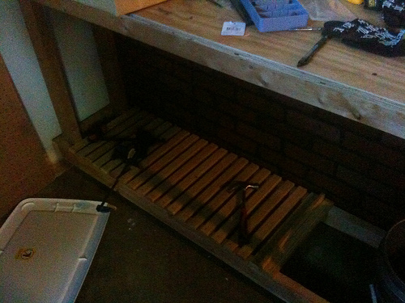
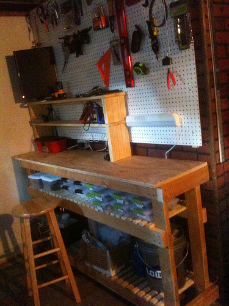

I got kicked out of my old work area so we could turn it into a guest room, and had to trash my reasonably good desk and setup that I had going on. In the midst of this, we were remodeling, so no actual work got done for months.
Thankfully, I was able to grab a bunch of 2x4 scraps from the remodeling and a piece of OSB and craft them into a new, better, longer (but shallower -- which is alright) bench. I ran a couple outlets over to an empty corner in my utility room and some pegboard, and the Mark II was born. Here are some pics of the construction.






